×
...In a Maze
The Kaleidoscope 2021 was the second edition of our festival, bringing our iconic maze layout to the forefront of the event. Working in a team of 3 as the Site Manager, we filled with 2 stages and 6 different art areas curated by ourselves and friends, the 2 day event hosted live musicians, workshops, talks and the freshest DJ's from the UK's electronic music scene.
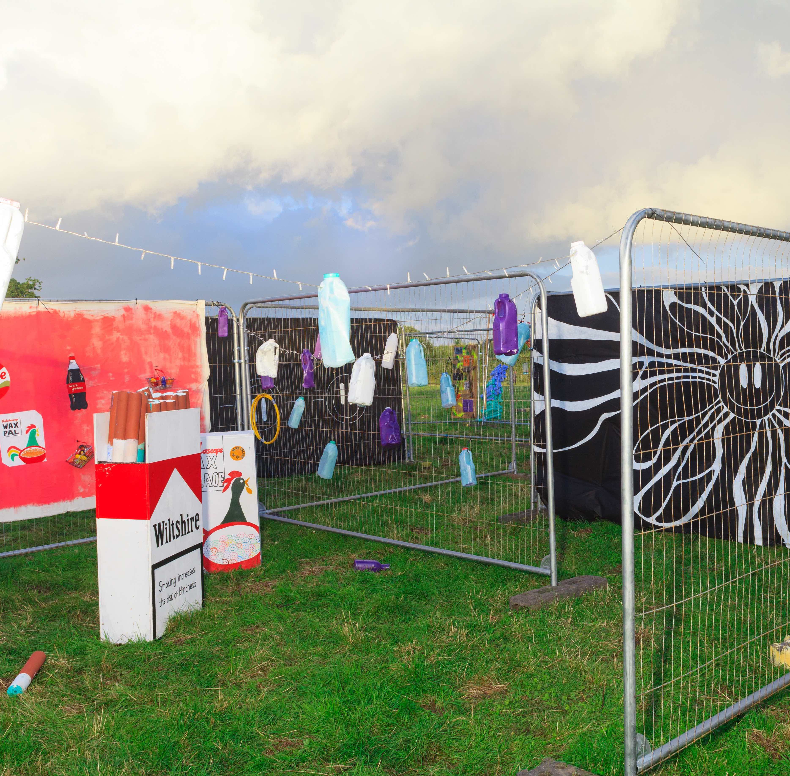
 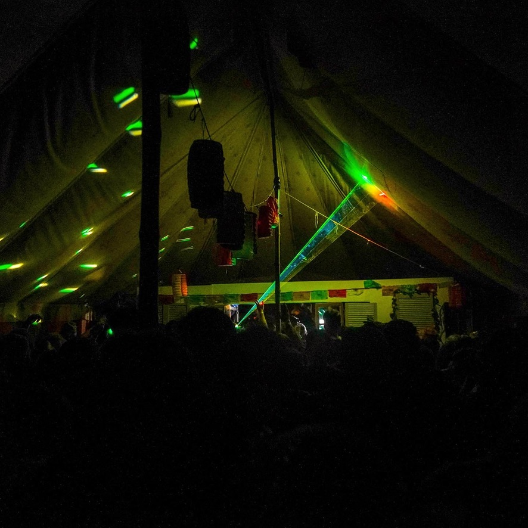
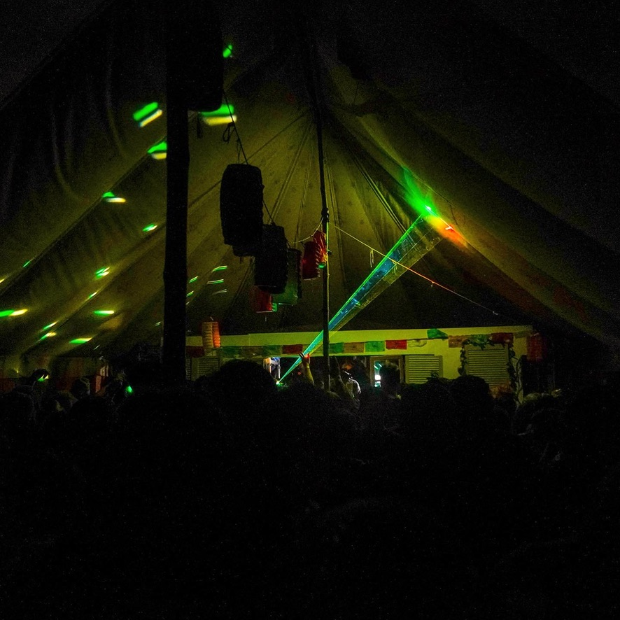
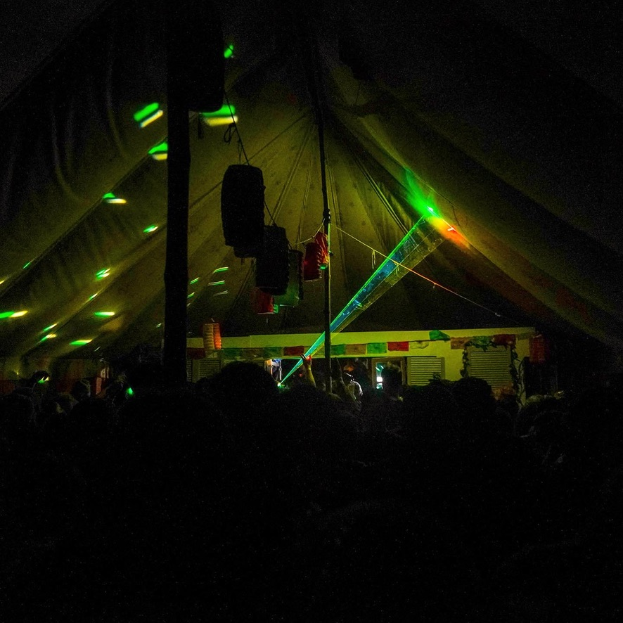
Built over a week, we constructed the maze with 300 fencing panels adorned with artwork ready for the 400 person crowd, battling rain and hail to make the event a success. Working on a budget and with limited professional experience I had to learn a multitude of new skills, including:


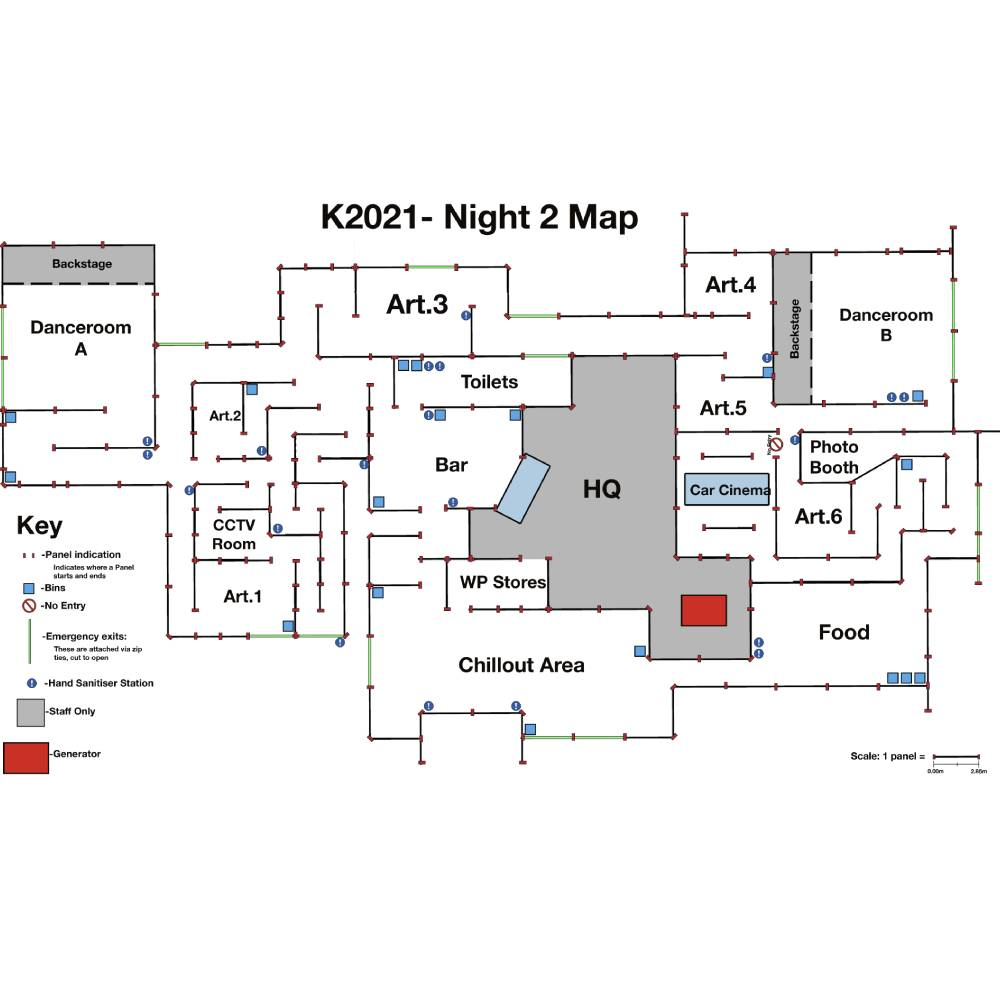


The event was a massive learning experience, dealing with a variety of issues including power limitations and poor medical staff. This taught us so much going forward with other events, but also showed that doing an event of this scale is possible. Whilst things did go wrong we were always able to resolve them in a timely manner and without indicating to the attendees that something was going wrong.
The Kaleidscope 2022
The third edition of our intimate 500 capacity festival in the heart of the Wiltshire countryside. Our biggest lineup yet, featuring DJs from across the spectrum of the electronic music scene, including Dr Banana, LUXE, Riz La Teef, Papa Nugs, Napes, DJ Love and Sophia Violet. Our two main stages were hand built, with one being converted from a disused school bus. We also invited our good friends at Aurora Sound to host their own stage spotlighting their network of female, non-binary and LGBTQ+ talent.

 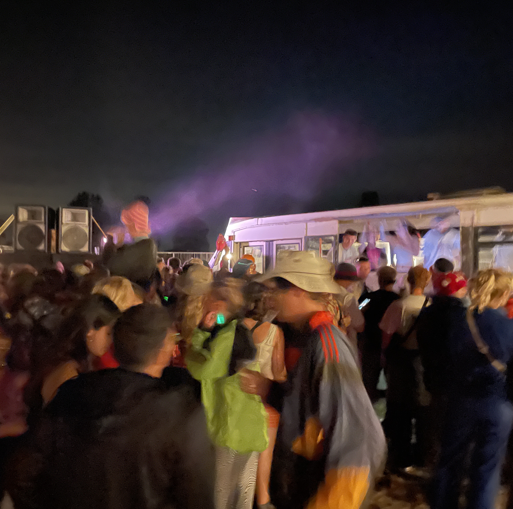
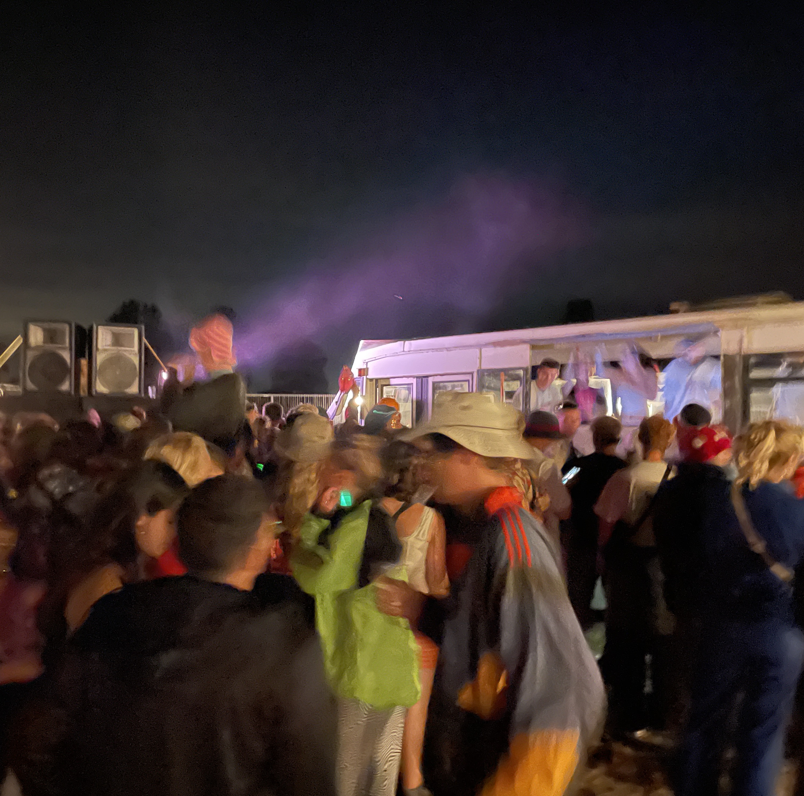
Hosted on the same site, I built upon the skills I had learnt the previous year leading the team as the festival director prioritising stage/set design and an increased focus on workshops and talent as well as adding a third day. The build this time took 2 weeks and only involved a core team of 3, managing a team of 20 friends lending their expertise from erecting safe structures to sound checks and proper audio setup. Whilst this was the 3rd year, the scale of the event was much larger and with my new role this meant longer hours and more work due to applying for a festival license that we previously did not need. This led to new roles and responsibilities including:
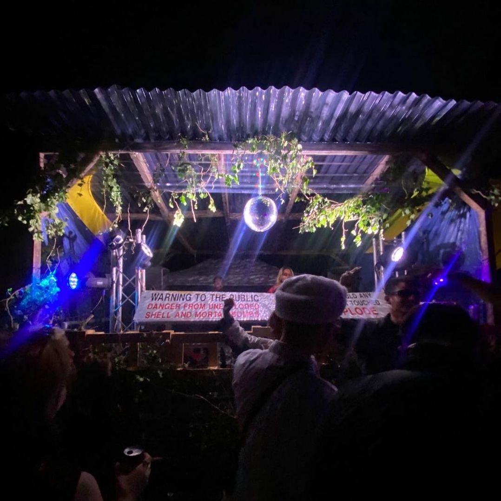
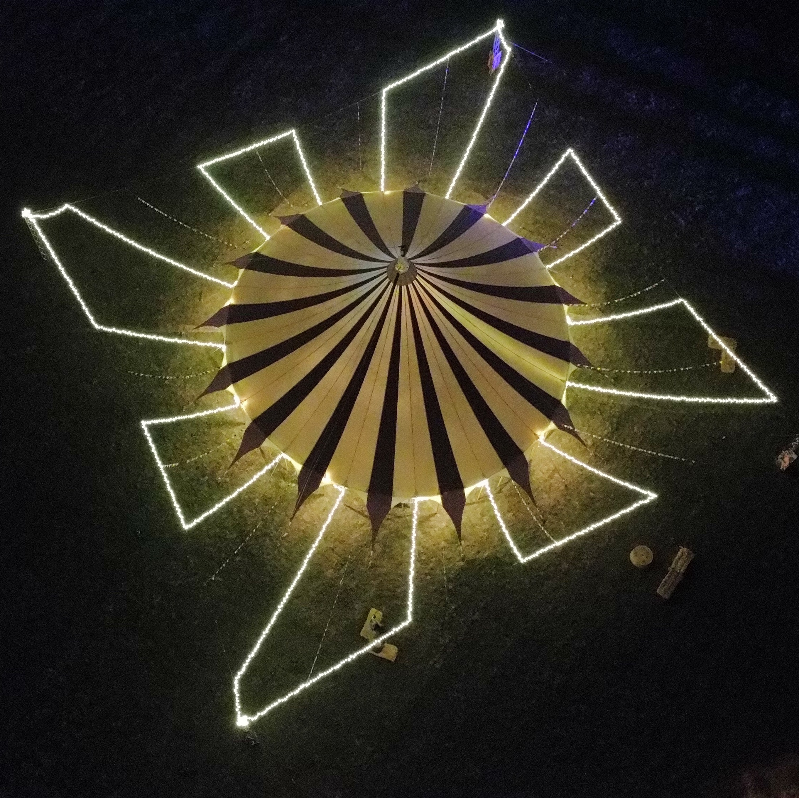
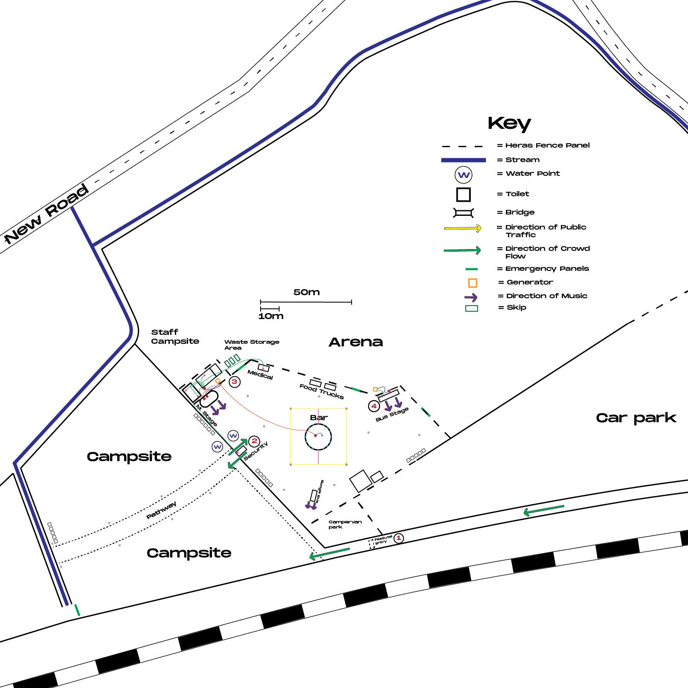
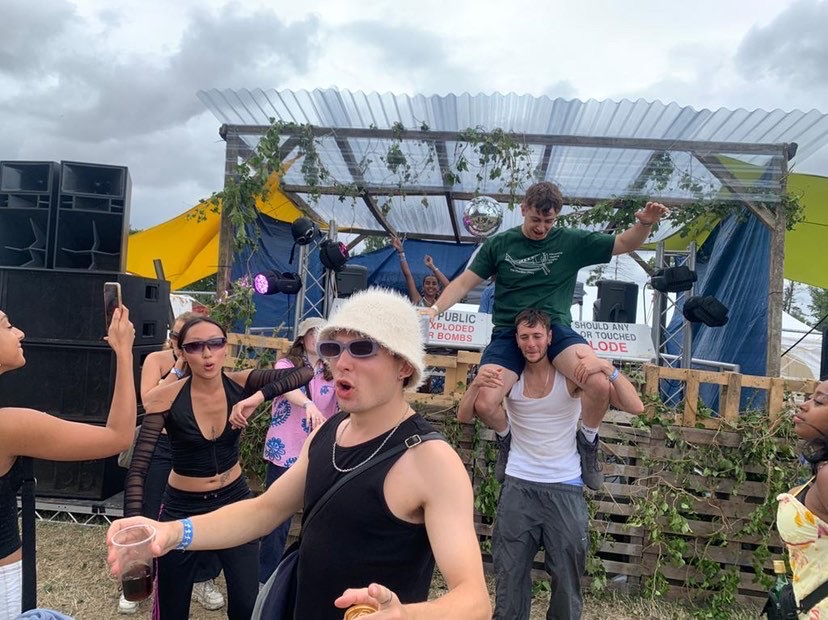
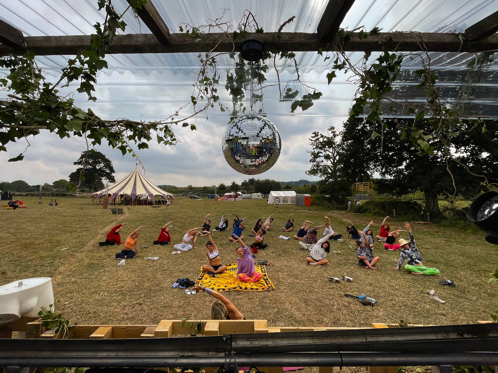
The workload meant 20+ hour days during the event, however we managed to succeed in ensuring the festival ran smoothly with no incidences of power shutting off or people getting injured. The final night brought a torrential thunderstorm, something which we had not anticipated with the weather forecasting. This led to the site being partially flooded and meant we had to think on our feet to waterproof sections we did not anticipate would need waterproofing, eventually managing to ensure all the sound equipment was watertight through tarps, tents and elevating amplifiers. Whilst it proved extremely stressful achieving this, it meant a very memorable night for the attendees, providing a background of techno and lightning to end the 3 days.